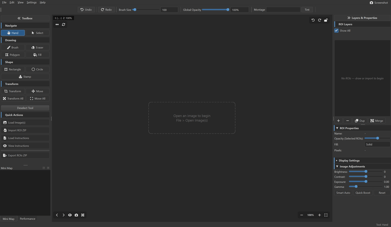

See It in Action

Built for Delineation Work
General-purpose tools like ImageJ and Napari can annotate images, but they weren't designed for the specific workflow of delineating dozens of ROIs on large scientific images. Montaris-X is.
7 Drawing Tools
Brush, Eraser, Rectangle, Circle, Polygon, Stamp, and Bucket Fill — each optimized for precise ROI delineation on scientific images.
Scientific Image Support
16/32-bit TIFFs, multi-channel composites, false-color display, and tiled rendering for images of any size.
Component-Aware Editing
Transform and move individual connected components within an ROI — no need to split layers manually.
ImageJ Compatible
Import and export .roi files and ZIP bundles directly. Drop-in replacement for ImageJ ROI workflows.
Fast & Lightweight
Native desktop performance with GPU-accelerated rendering. Handles thousands of ROIs without lag.
Offline & Private
Runs entirely on your machine. No cloud, no account, no data upload. Your research stays yours.
How Montaris-X Compares
| Feature | Montaris-X | ImageJ / FIJI | QuPath | Napari |
|---|---|---|---|---|
| Purpose-built for ROI delineation | Yes | No | No | No |
| Native desktop performance | Yes | Yes | Yes | Partial |
| 16/32-bit TIFF support | Yes | Yes | Yes | Yes |
| Multi-channel composites | Yes | Yes | Yes | Yes |
| Component-aware transform | Yes | No | No | No |
| ImageJ .roi import/export | Yes | Native | No | No |
| Brush + Polygon + Stamp tools | Yes | Partial | Partial | Partial |
| Session auto-save & recovery | Yes | No | No | No |
| No Java runtime required | Yes | No | No | Yes |
| Cross-platform (Win/Mac/Linux) | Yes | Yes | Yes | Yes |
| Free & open source | MIT | Public domain | GPL | BSD |
Ready to Get Started?
Install Montaris-X in seconds with pip:
pip install montaris-xInstallation Guide